Rendered 2026-10-17 from docs/spec.json by tools/status_page.py. The Definition of Done, what is open and how to run are in docs/STATUS.md.
Spec updated: 2026-10-17 merge polish (lane/polish, lane/speed).
built 77deferred 4partial 7planned 18
| Id | Name | Area | Milestone | Status | What | Result |
|---|---|---|---|---|---|---|
| ST-DICT | OpenCV's dictionaries without OpenCV | core | M1 | built | The 21 predefined dictionaries from the checked JSON table; a marker as a grid, as merged black rectangles, as PNG and SVG. The table's sha256 is checked on load. | core/dictionary.py; goldens/dictionary.json exact; REF test_aruco_output ported |
| ST-BOARD | Single marker, grid board, ChArUco board | core | M1 | built | Counts, ids, extents, object points, chessboard corners, the ink and the frame OpenCV reports, exactly as cv2 5.0.0 makes them. | core/board.py; goldens/board.json exact; REF test_aruco_board ported (51 checks) |
| ST-SIZE | Auto size on a face with holes | core | M1 | built | The largest clear rectangle of an outline with holes and notches (proven branch and bound); the smart default; typed sizes clamped with a note; the ranked Layout list; the dictionary grows with the ids in use. | core/autosize.py; REF test_aruco_autosize ported (110 checks); goldens/autosize.json exact |
| ST-CELLS | Cell multiple on a print grid (versioned, CELL_RULE 1) | core | M1 | built | Sizes on 0.5 mm steps (legacy, no 'cells' key) or every cell a whole number of the printer's line width. A tag without the key never changes. | CELL_RULE 1 kept; the 511 legacy sizings exact; REF test_aruco_cells ported |
| ST-ORIGIN | Origin: the frame is always OpenCV's (versioned, ORIGIN_RULE 2) | core | M1 | built | Four quarter turns per layout; a rectangular board at 90 / 270 is OpenCV's board on its side; a node without 'origin_v' keeps the old rule. OpenCV's frame is derived from its conventions alone. | ORIGIN_RULE 2 kept; goldens/origin.json (both rules) exact; REF test_aruco_frame's origin half ported |
| ST-HGT | Modes and heights in Extrude's words | core | M1 | built | White + black, Black only, White only; each colour an extrude from an Offset, Height further; the parts (tile, pin, pocket, pattern, recess, trim) follow from where the slabs sit; the legacy height / thickness / above parameters map to the same geometry. | core/slabs.py; goldens/slabs.json exact; REF test_aruco_slabs ported (106 checks) |
| ST-MARK | Corner mark | core | M1 | built | None / Cut / Triangle at OpenCV's corner 0, only where valid, never a marker's black cell; the old 'chamfer' checkbox reads as Cut. | core/chamfer.py; goldens/chamfer.json exact; REF test_aruco_chamfer ported (579 checks) |
| ST-PINS | Locating pins and their holes | core | M1 | built | A triangle or two round pins under a New-body tag with matching holes grown by the tolerance, clear of a cut corner, following OpenCV's origin. | core/slabs.py pin_outlines / grow, chamfer.pin_inset; in goldens/slabs.json and REF test_aruco_slabs / chamfer |
| ST-LABEL | Label: content, placement, the pixel font, the clearance rule (versioned, RULE 2) | core | M1 | built | One template, placed on the black or on the white, auto-sized in the 5-pixel font a 0.6 mm nozzle prints, every detection rule checked; a refused label still laid out as a preview with its violations in words; Build anyway; Auto position; every copy relabelled with its own id. A label without 'rule' is rule 1. | core/label.py, RULES {1, 2}, RULE 2 kept; goldens/label.json + the rule-1 golden exact; REF label suites ported |
| ST-TRIM | Trim excess (versioned, RULE 1) | core | M1 | built | The tag's outline plus a margin as the column the body keeps along x / y / both; the refusals (not a rectangle, a hole cut, too much volume lost, nothing measured); Cut anyway. REF: docs/design_aruco_trim.md, tests/test_aruco_trim*.py. | core/trim.py, RULE 1 kept; goldens/trim.json and the trim golden's 288 plans exact |
| ST-SETTINGS | A tag's settings and numbers, all five generations | core | M1 | built | SPEC_VERSION 2, default_settings, normalise (old chamfer, frame, rotate_deg), Auto size = size 0, the edit model (what an edit changes: compute, rebuild, structural), the rebuild words. | core/settings.py + core/edits.py (NodeState); goldens/settings.json (1,014 cases from REF's aruco_feature) exact |
| ST-VALIDATE | Per-field messages | core | M1 | built | Every info line, warning and refusal of the tag form as an Issue(field, level, text): size, cells, layers, label, mark, pins, trim, origin. The same words the Fusion dialog shows. | plan/spec.py check() + plan/plan.py issues_of(): every note, the label's words, the trim's and the dialog's info lines as Issue(field, level, text) on a TagSpec key path; tests/plan/test_validate.py |
| ST-PRESETS | Print presets and PrusaSlicer profiles | core | M1 | built | Built-in and named presets (printer profile, cell multiple, dictionary, mode, op, heights, quiet zone); a preset from a PrusaSlicer print profile (nozzle, line width, layer height) read from ini text; the file format bam_aruco_presets/1 kept. | core/presets.py (store-agnostic) + core/prusa.py (on text); REF test_aruco_presets ported (62 checks); goldens presets / prusa / preset_library exact. The file store is M2b's |
| ST-NUMBER | Numbering planner | core | M1 | built | Every visible instance its own marker per dictionary family, boards contiguous, overrides exact, ids inside the dictionary or a named refusal, stable re-planning. | core/numbering.py; REF test_aruco_numbering ported (153 checks); goldens/numbering.json exact |
| ST-LEDGER | Printed ids never move | core | M1 | built | The id ledger (bam_aruco_ids_ledger/1): every copy ever numbered and every id ever printed; copies matched by stamp chain, place, then path; a printed id is never handed to another copy while the dictionary has unused ids. | REF test_aruco_ids_stability ported (64 checks); REF's 17 ledger mutations each killed |
| ST-TABLE | One marker table | core | M1 | built | One row per tag copy named '<path>|<key>', natural order, duplicates flagged, the Status words. | core/marker_table.py; REF test_aruco_marker_table's names and rows ported |
| ST-SNAPSHOT | Numbering over an assembly snapshot | core | M1 | partial | plan_design, hidden copies, stamps, staleness and the auto-rebuild verdict over a plain AssemblySnapshot (tags, occurrences, overrides, ledger, state) that any adapter can fill (core/ids_design.py). | core/ids_design.py: AssemblySnapshot, collection(), plan_design / plan_snapshot == plan_stable on F1..F11, stamps, auto_verdict. staleness / _drift measure Fusion bodies: M4 staleness and _drift read Fusion bodies; they belong to the adapter (M4 skeleton; measured only at the Fusion gates) |
| ST-RESTRUCTURE | What a structural edit does, in the core | core | M1 | built | core/restructure.py: restructure_plan (which roles lose or gain a base feature or a combine between two node structures), the refusal words, what goes and who loses it; core/edits.py: the after-compute verdict. Pure; the adapter only executes it. | core/restructure.py; goldens/restructure.json (REF's own restructure_plan, 400 pairs) exact; refusal in goldens/settings.json; core/edits.verdict |
| ST-JO-MATHS | Joint Origin composition maths | core | M1 | built | core/geometry.py: jo_decompose(frame) -> (angle about the unflipped z, offsets along the final axes, flip) and jo_compose back, as Fusion composes a Joint Origin (REF aruco_tags._place_joint_origin). Any adapter that places a frame from three numbers uses it. | core/geometry.py jo_decompose / jo_compose; goldens/jo_maths.json (REF's _place_joint_origin) exact; 2,000 random frames round-trip |
| ST-FACES | The target palette: box, disc, the ten faces | core | M1 | built | core/faces.py: REF's ten non-box gallery faces plus a box and a disc as loops in mm, tessellated the way Fusion strokes an edge. The Studio's stand-in for a clicked face; the autosize tests use the same list. | core/faces.py: REF's ten gallery faces + a box and a disc (PALETTE) |
| ST-PLAN | plan_tag: TagSpec in, TagPlan out | plan | M2 | built | The port of aruco_feature.evaluate() as a pure function of settings, numbers and a Target (outline in mm): fit, Origin turn, mark, label (a strip grows the tile), pins, trim, slabs. Never raises. Replays REF's evaluate() goldens. | plan/evaluate.py (REF evaluate() line for line) + plan/plan.py plan_tag; 786 + 38 evaluate() goldens replay exactly (tests/plan/test_golden_evaluate.py); never raises (2,000-spec fuzz) |
| ST-LAYERS | Layers: polygons with holes and a z range | plan | M2 | built | tile, pocket, pattern, label cut / join, white strip, mark cut / triangle, pin, hole, recesses, trim keep column: each a colour, an op (add / cut / keep), a z range and 2D polygons in the pattern frame. One list feeds the 2D view, the 3D view, Fusion, build123d and the exports. | plan/layers.py: REF's temporary bodies step by step (part, solid, step add / sub, op, colour, z, polygons, circles) + combines; flattened exactly by plan/mesh.py |
| ST-FRAME | The OpenCV frame in the plan | plan | M2 | built | TagPlan.frames.opencv: the detector's frame of the tag as built, in the pattern frame, plus the detector plane. What a Joint Origin, a URDF link or a viser frame is placed on. | TagPlan.frames: opencv (pattern frame), opencv_target, pattern_in_target, detector_z_mm; tests/plan/test_frame.py, tests/plan/test_ref_frame_evaluate.py |
| ST-RECORD | The record a tag stores | plan | M2 | built | spec, mark, label, trim and the rule versions as REF writes them (fusion.mark, fusion.label), the digests, 'OK unchanged writes nothing'. A REF record reads back into a TagSpec. | plan/record.py: REF record, record_same, frame / record / ev digests, node words; spec.from_record; tests/plan/test_record.py |
| ST-VARIANT | A copy's plan from the template's | plan | M2 | built | Relabel by the copy's id and name; which cells flip colour between two ids (id_regions); the label slots. A copy's plan differs from the template's only there. | plan/variants.py: copy_plan (relabel by id and name), id_regions, label_slots, label_warning; tests/plan/test_variants.py |
| ST-MESH | Triangles for the 3D view and STL | plan | M2b | built | Every layer as a watertight triangle mesh (boxes, extruded polygons with holes). | plan/region.py (stdlib 2D booleans, slab sweep) + plan/mesh.py: exact solids per z slab, closed meshes (every edge in two triangles), volume = area x height; tests/plan/test_mesh.py |
| ST-WARN | Warnings per field in the plan | plan | M2 | built | Every note evaluate() produced (autosize notes, the Origin note, the mark's 'instead', the label's violations, the trim's refusals) as an Issue on the field it belongs to. | plan/plan.py issues_of: autosize notes, the Origin note, the mark's 'instead', the label's words, the trim's refusals, each on its field |
| ST-GUIDES | Guides in the plan: quiet ring, clear zones, keep-outs, a refused label's preview | plan | M2 | built | TagPlan.guides: the sticker, the quiet ring, the label's hard and preferred clear zones under its rule, the mark's and pins' keep-outs, a refused label's preview boxes and the target's loops, all in the pattern frame. What the 2D view draws and nothing prints; the app never derives them. | TagPlan.guides: sticker, quiet ring, clear zones (hard / preferred), keep-outs, a refused label's preview, tile, target loops, trim; tests/plan/test_layers.py |
| ST-SPEC-CHECK | Every TagSpec field checked, by name | plan | M2 | built | ARCHITECTURE 5.6: per field its type, valid range (REF's named constants), the Issue it gives and its level. A wrong type is a 422 / TypeError naming the key path; a wrong value is an Issue whose field is the key path (numbers.size, settings.label.cap_mm, ...). plan_tag never raises. | plan/spec.py + plan/fields.py (= GET /api/form): every row of ARCHITECTURE 5.6; a wrong type is SpecTypeError / HTTP 422 naming the key path; tests/plan/test_validate.py, tests/server/test_api.py |
| ST-SCENE | Many tags on one canvas | scene | M2b | built | A Scene of SceneTags (name, TagSpec, pose in mm, locked); add, move, duplicate, delete. | scene/model.py: Scene, SceneTag (TagSpec, x, y, rotation, locked, hidden, uid); add, move, rename, duplicate, delete, edit with the lock rule |
| ST-SCENE-FILE | The .arucostudio.json file (versioned) | scene | M2b | built | arucostudio.scene/1: the scene as JSON without the cached plans; a migration per schema number; round-trip exact. | scene/file.py: arucostudio.scene/1, plans dropped, migrations table, unknown schema refused with a message; tests/scene/test_scene.py |
| ST-RENUMBER | Renumber a scene | scene | M2b | built | Unique ids per family across the scene through the real planner; typed overrides; the scene's own ledger so a printed tag keeps its id; a locked tag's ink never changes. | scene/ids.py: core.numbering.plan_stable on the scene as an assembly (a component per tag, its uid as the stamp chain), overrides, locked tags fixed, the ledger in the file; tests/scene/test_scene.py |
| ST-VERIFY-DETECT | OpenCV reads every plan | verify | M2b | built | A plan rendered from its own layers (label ink included) is read by cv2.aruco: every id, boards as boards. | verify/render.py (pixel CSG of the layers) + verify/detect.py (cv2.aruco ArucoDetector / CharucoDetector with OpenCV's own boards): ids and corner error in px and mm |
| ST-VERIFY-PNP | The frame checked by PnP | verify | M2b | built | The rendered plan warped into a pinhole camera 25 degrees off; solvePnP against the plan's object points equals TagPlan.frames.opencv within 0.1 mm / 0.1 deg. | verify/pnp.py: the render warped into a camera 25 deg off, REF's solve(), compared with frames.opencv; within 0.1 mm / 0.1 deg for every layout x turn x mark x label |
| ST-EXP-IMAGE | SVG and PNG of a tag and of a scene | export | M2b | built | True-size SVG (viewBox in mm) and PNG (pHYs) from the layers; label ink and marks drawn as they print. | plan/exports.py to_svg (1:1 mm, viewBox = tile or sticker), scene/sheet.py to_svg (1:1 sheet), PNG via the server (20 px / mm, pHYs); tests/plan/test_exports.py, tests/server/test_api.py |
| ST-EXP-PDF | PDF print sheet | export | M2b | built | A true-size sheet on letter or A4, never scaled, ruler bars, '#id' in the border, the orientation triangle, the part name. Later: the 3D label's text (REF OI-PDF-LABEL). | scene/sheet.to_pdf: every visible, planned tag as a sticker on REF's print sheet (core.sheet: A4, cut marks, '#id' in the border, the ruler); POST /api/scene/export/pdf; Export > Sticker sheet (PDF). tests/verify/test_pdf_sheet.py: pdfium at 300 dpi, OpenCV reads every id of 12 tags in 3 dictionaries, a sticker's square within 1.5 px (0.13 mm) of its planned size (audit C1) |
| ST-EXP-STL | STL per layer / per colour | export | M2b, M6a | built | One STL per tag part (tile, cells), face-down orientation for printing, from plan/mesh. | plan/exports.to_stl: binary STL of the tag's closed bodies (all, or one of body / white / pattern), stdlib. M6a's print bundle (scene/export.print3d, POST /api/scene/export/print): print3d/stl/<tag>__tile.stl and __cells.stl per 3D tag, and core.beds.render_beds's print3d/parts/<part>__tile.stl / __cells.stl oriented for printing (face down when the black is inlaid flush; the reason recorded per part); tests/scene/test_print_bundle.py |
| ST-EXP-3MF | PrusaSlicer project with beds | export | M2b, M6a, M8c | built | The scene's tags packed on the printer's beds, tile on extruder 1 and cells on extruder 2, with the presets resolved from PrusaSlicer's vendor bundle (fixture). | Two ways. M6a's bundle (scene/export.print3d): parts.json (bam_aruco_print3d/1, what core.beds.load_parts reads), core.beds.layout_beds + render_beds -> print3d/aruco_tags.3mf and print3d/beds/bed_*.3mf, one object per part, the cells on the black slot (tests/scene/test_print_bundle.py::test_print3d_holds_exactly_the_3d_tags: exactly the 3D tags, the ledger marked). M8c's Send (scene/print3d.py, POST /api/scene/send/prusaslicer): one object per body, the tags as volumes, white on extruder 1, black on 2, negative volumes per slab, the config = the chosen physical printer's full preset chain and its bed (tests/scene/test_print3d.py, tests/server/test_prusa_api.py; the headless slice: tests/verify/test_slice_check.py) |
| ST-API | The Studio API on 127.0.0.1:5360 | server | M2b | built | FastAPI: health, dictionaries, plan, validate, candidates, scene open / save / renumber, exports, verify, presets, profiles; OpenAPI for the web app's types; serves studio/dist. | server/app.py: FastAPI on 127.0.0.1:5360 (docs/API.md), strict 422s naming the key path, CORS for 5361, studio/dist served when built; tests/server/test_api.py |
| ST-STORE | The Studio's own store | server | M2b | built | Presets (bam_aruco_presets/1), remembered options, the recent list, scenes and exports under ROOT/.data (ARUCO_STUDIO_HOME); PrusaSlicer's config directory read only. Never %USERPROFILE%/CADExporter. | server/store.py: presets (bam_aruco_presets/1), remembered options (REF aruco_settings as server/remembered.py), scenes, exports under ROOT/.studio_data and ROOT/scenes; PrusaSlicer read only; never %USERPROFILE%/CADExporter. M3: the Library's recent list (server/library.py, <home>/aruco_preset_library.json, REF's shape) |
| ST-UI-2D | 2D canvas like Figma | studio | M3 | built | An SVG canvas: pan, zoom, select, drag with 0.5 mm snap, rulers; many tags, each on its own target; each drawn as target outline + layers + guides, every path tagged data-layer; the label's clear zones and a refused label in orange (data-state=refused). | studio/src/canvas: pan, zoom at the cursor, space/middle/right-drag pan, select, shift-select, marquee, drag with 0.5 mm snap, rulers, Arrange; each tag = target + the plan's top view + every layer as a data-layer path + guides (quiet zone, clear zone, keep-outs, refused label data-state=refused, trim) + OpenCV axes; OpenCV reads every tag back off a canvas screenshot (e2e/tests/canvas.spec.ts) |
| ST-UI-TARGET | The target editor | studio | M3 | deferred | The Studio's stand-in for a clicked face: pick a box, a disc or one of the ten faces from /api/targets, or type width / height, a thickness (0 = no body) and holes; the canvas draws it; Auto size, pins, pockets and trim plan against it (prism volumes). | studio/src/inspector/TargetEditor.tsx over POST /api/target: the palette (box, disc, ten faces), a typed box or disc, round holes, a thickness (0 = no body); e2e/tests/target.spec.ts replaced by ST-UI-SKETCH: M8b1 deleted TargetEditor.tsx (POST /api/target stays for scripts) |
| ST-UI-3D | 3D view with a 2D / 3D toggle | studio | M3 | built | three.js; the layers extruded between their z; heights, recesses, pins and the trim column visible; the OpenCV frame as a triad; the toggle keeps the view's centre like Google Maps. | studio/src/view3d: three.js from /api/plan?mesh=1 (scene ?mesh=1), orbit, click to select, the OpenCV triad, z exaggeration; the 2D/3D toggle keeps the centre within 1 px; window.__studio.zRange (e2e/tests/views.spec.ts) |
| ST-UI-INSPECTOR | The tag inspector with per-field messages | studio | M3 | built | Layout, dictionary, id, size (Auto), cells, mode, op, Offset / Height per colour, Origin, corner mark, label, pins, trim; the Layout candidates; messages from /api/validate under each field. | studio/src/inspector from /api/form: tabs Marker / Heights / Print / Label / Advanced with icons, icon dropdowns, the Fit candidates, every Issue under its field, one summary line, a typed non-number refused in the field (e2e/tests/inspector.spec.ts, label.spec.ts) |
| ST-UI-IDS | The IDs table and Renumber | studio | M3 | built | One row per scene tag; type an id to override; Renumber; click a row to select. Click again to zoom is M5 (ST-T-UI-12). | studio/src/ids: one row per tag, typed first id, Renumber all (unique per family, stable, overrides and locked tags kept), click selects, double-click zooms (e2e/tests/ids.spec.ts). Click-again-to-zoom stays M5 (ST-T-UI-12) |
| ST-UI-LIBRARY | The print preset library | studio | M3 | built | Cards with an SVG thumb, filters, Select / New / Duplicate / Edit / Delete / Import from a PrusaSlicer profile; a React port of REF's HTML library. | brought forward from M5: studio/src/library (React port of REF preset_library) over server/library.py (REF Library on the Studio's store): Recent / This scene / My presets / PrusaSlicer / Built-in, thumbs, Filters | Info, New / Duplicate / Edit / Import / Delete, Select / Cancel (e2e/tests/library.spec.ts) |
| ST-UI-EXPORT | Export and Verify from the app | studio | M3, M8b2 | built | SVG / PNG / PDF / STL / 3MF buttons; Verify shows every id read and the PnP error per tag. | Export: the 1:1 SVG sheet, a PNG sheet, the old PDF sticker sheet, STL and plan JSON per tag, the scene file, one tag's SVG / STL / JSON (e2e/tests/export.spec.ts, audit.spec.ts); since M8b2: Sticker sheet… (the dialog, its SVG preview, Export of the sheet files), Print sticker sheet… and Send to PrusaSlicer… (the 3MF project with the colours on their extruders: e2e/tests/send.spec.ts); Verify: every tag (ids, corner and PnP error, the raster; a row goes stale when its tag changes; progress per tag) and the sheet (every marker found, overlapping tags). The beds 3MF of the print bundle has no menu item: POST /api/scene/export/print writes it |
| ST-UI-SCENE-FILE | Open and save scenes | studio | M3 | partial | New, open, save, save as of .arucostudio.json; the recent list. | File: New, Open (every saved scene with its date), Save, Save as; save, reload, open gives the same tags and poses (e2e/tests/scene.spec.ts); unsaved changes shown by a dot on the scene name, New / Open ask 'Save changes?', closing the tab asks too (e2e/tests/audit.spec.ts) no separate recent-scenes list (the Open dialog lists all, newest date shown) |
| ST-FUSION-BUILD | TagPlan to Fusion bodies | adapter | M4 | partial | Every layer a temporary body (boxes, prisms), join / cut / intersect per op, in parts order; tested against a fake adsk with a CSG stand-in. Not installed into Fusion in this run. | adapters/recipe.py + adapters/fusion/bodies.py, features.py: every evaluate() golden case builds on the recording fake adsk, one body per layer (tests/adapters/test_build.py, test_recipe.py, test_call_sequence.py) skeleton on the fake adsk; Fusion gates F1-F8 pending (docs/FUSION_ADAPTER.md section 4): the live add-in still loads REF |
| ST-FUSION-RECORD | Records on the component | adapter | M4 | partial | plan/record.py's dict plus the adapter's handles (tokens, body names, group); a REF record reads back into the same TagSpec and plan. | adapters/fusion/records.py: a node reads back as the same TagSpec on every golden case; Edit -> OK unchanged writes nothing (tests/adapters/test_records.py) skeleton on the fake adsk; Fusion gates F1-F8 pending (docs/FUSION_ADAPTER.md section 4): the live add-in still loads REF |
| ST-FUSION-JO | One Joint Origin per tag on OpenCV's frame | adapter | M4 | partial | The composition maths (angle about the unflipped z, flip, offsets along the final axes) from TagPlan.frames.opencv; the read-back check; the one-per-tag rule. | adapters/fusion/joint_origin.py on core.geometry.jo_decompose: 200 random frames read back exactly on the fake; one Joint Origin per tag after the 12-edit run (tests/adapters/test_joint_origin.py) skeleton on the fake adsk; F8 measures the stand-in's guesses in Fusion; Fusion gates F1-F8 pending (docs/FUSION_ADAPTER.md section 4): the live add-in still loads REF |
| ST-FUSION-RESTRUCTURE | Restructure plan | adapter | M4 | partial | Which roles to delete and create between two node structures, the refusal words; the pure half, tested on the fake. | adapters/fusion/restructure.py driven by core.restructure: 22 x 22 structures x 2 layouts x sketch / none in place on the fake, a failure at each step taken back whole (tests/adapters/test_restructure.py) skeleton on the fake adsk; Fusion gates F1-F8 pending (docs/FUSION_ADAPTER.md section 4): the live add-in still loads REF |
| ST-FUSION-MIGRATION | The migration map | adapter | M4 | partial | docs/FUSION_ADAPTER.md (the migration map): every (F) responsibility and every Fusion quirk of REF's add-in mapped to the adapter; the switch-over steps for the live add-in, gated on the goldens. | docs/FUSION_ADAPTER.md: the boundary, the 91 Fusion quirks and where each is honoured, the migration map of all 45 REF modules, the gated steps F1-F8, the core requests (R1 done: keep_x in core.geometry). PLAN D10 names this file (it was docs/MIGRATION.md) the switch-over itself is Fusion-gated (F1-F8) and needs Zach's OK; REF moved past the pin c8216ff in the add-in files the ports came from (audit C3): re-pin before the switch |
| ST-HOLES | Screws and holes against a ChArUco board | later | planned | REF proposal_aruco_chamfer.md section 7: a head centred in a black square at most 0.35 of the square is safe; a bright head near an inner corner pulls it; never a screw in a white square; keep id 17 off other tags. Inventory gap 1. | new behaviour, not a port (inventory gap 1); planned after the Studio exists, no test yet (PLAN section 5) | |
| ST-HAMMING | Hamming distance among the ids in use; range-first dictionary choice | later | planned | The minimum Hamming distance of the ids a scene uses; the largest bit size that still reads at the camera's range (markers.suggest). Inventory gap 6. | new behaviour, not a port (inventory gap 6); planned after the Studio exists, no test yet (PLAN section 5) | |
| ST-FORGET-RETIRED | Forget retired ids | later | planned | Let a retired id back into the pool on request. Inventory gap 7. | new behaviour, not a port (inventory gap 7); planned after the Studio exists, no test yet (PLAN section 5) | |
| ST-SHEET-OPTIONS | The sheet's full option set | later | planned | id_text template, orient_corner, emboss_id, the chamfer cut line, the q >= 0.7 guard on the triangle; the 3D label's text printed on the sheet (REF OI-PDF-LABEL). Inventory gaps 2 and 3. | new behaviour, not a port (inventory gap ?); planned after the Studio exists, no test yet (PLAN section 5) | |
| ST-ADAPTER-B123D | build123d adapter | later | deferred | A Face as a Target; each layer extruded and fused / cut; the assembly as an AssemblySnapshot for renumbering. | deferred: the plan contract settles first; build123d is in no venv here (PLAN section 5) | |
| ST-ADAPTER-VISER | viser adapter | later | deferred | TagPlan.mesh per layer as viser meshes; the OpenCV frame as a frame handle; renumber from the scene graph. | deferred: same as build123d; viser lives on the Linux box (PLAN section 5) | |
| ST-LIVE-SWITCH | Switch the live Fusion add-in to the new core | later | deferred | A later, Fusion-gated run: the add-in imports aruco_studio.core and plan; REF's edit gates re-run; every golden stays green. | deferred: a Fusion-gated run (docs/FUSION_ADAPTER.md gates F1-F8) after REF is re-pinned (audit C3), with Zach's OK | |
| ST-PRESET-KIND | The preset is the machine: kind, dpi, page, stock, sheet mode; two collections | core | M6a | built | A preset says how a tag is made (a 3D printer or a sticker printer); the options follow it. Two sticker built-ins; the Library's two collections. | core/make.py, core/presets.py (kind, dpi, page, stock); docs/status/M6a.md |
| ST-HOLES-RULE | Holes: avoid / ignore | plan | M6a | built | settings.holes (absent = avoid): Ignore fits on the outer loop only and warns when the marker crosses a hole. The M6 note calls it ST-HOLES; renamed here because ST-HOLES is the older, planned 'screws and holes against a ChArUco board'. | plan/evaluate.py, core/make.py holes_of; tests/plan/test_holes.py |
| ST-PERIMETER | Perimeter: Marker / Profile for a sticker; = Trim excess on a 3D tag; the no-white label rule | plan | M6a | built | A sticker is the marker's rectangle or the profile's outline with its holes; on a 3D tag the same row writes Trim excess. With Marker and no margin a label goes on the black only (FB-11). | core/make.py, plan/fields.py; tests/plan/test_make_plan.py |
| ST-LABEL-RULE3 | Label rule 3: a manual ChArUco label in any black square; the form offers a square only | core | M6a | built | A label placed by hand in any black square of a ChArUco board is checked against that square; rule 2 accepted the top-left only. | core/label.py; tests/core/test_label_rule3.py (18 of 18 squares) |
| ST-LABEL-RULE4 | Label rule 4: a ChArUco label on auto stays in a black square | core | audit 2026-10-17 | built | FB-13. From rule 4 Position auto on a ChArUco board never falls back to the white: no room in its square is one message under Label (fewer columns, a bigger checker or Content #id) with the orange preview in the square. A new tag stored rule 4 until rule 5 (lane polish); rules 1-3 plan as before. | core/label.py (RULES 1-4, NEW_RULE 4, SQUARE_ONLY_RULE), plan/plan.py LABEL_WORDS; tests/core/test_label_rule4.py |
| ST-LABEL-RULE5 | Label rule 5: a label cut from the black strokes at least 1.1 cell lines | core | lane polish 2026-10-17 | built | Q1's recommended default. A label cut out of the black has strokes of at least label.LINE_STROKE = 1.1 lines of the tag's cell rule (0.748 mm at 0.68 mm lines); a label on the white keeps the nozzle floor; a typed cap under the floor is refused and the reason names rule 5. A new tag stores rule 5; rules 1-4 plan as before. | core/label.py (RULES 1-5, NEW_RULE 5, LINE_STROKE), plan/evaluate.cell_line_mm; tests/core/test_label_rule5.py, tests/verify/test_slice_check.py |
| ST-UI-LIVE-FAST | Live re-placement fast: the light drag preview, the meshes on release | studio | lane speed 2026-10-17 | built | Audit B1. A drag asks /api/design/preview?top=1 only (in 3D each tag stands as a slab of its top view); the release asks once with mesh=1. One sweep per slab, a linear simplify, a fast exact pinch check, plain_json, no GC pauses mid-edit. Results bit-identical. The forearm: about 75 ms a drag step and 210-280 ms for the 3D release on a quiet box. | plan/region.py, plan/mesh.py, server/app.py (no_gc, _kept_mesh), server/design_api.py (plain_json), studio/src/store.ts, view3d/View3D.tsx; docs/status/speed.md |
| ST-SHEET-MODES | The sticker sheet, spaced or tight | export | M6a | built | Spaced: gaps, a caption and crop marks per sticker. Tight: guillotine shelves that share cut lines. Cut lines for outlines and holes. | core/sheet.py, scene/sheet.py; tests/core/test_sheet_modes.py |
| ST-SHEET-SVG | The sheet as SVG and JSON beside the PDF | export | M6a | built | sheet.svg (the Studio's preview) and sheet.json (the oracle) from the same layout as sheet.pdf. | server/sheet_api.py; docs/API_sheet.md |
| ST-WYSIWYG | The page equals the plan | verify | M6a | built | The sheet's raster read back against each sticker's plan: ink, ids, label, outline, the scale bars. | verify/sheet_check.py; tests/verify/test_sheet_wysiwyg.py |
| ST-TARGET-CHECKS | One chord tolerance; a loop outside the outline is refused; loops normalised | plan | M6a | built | plan.target.CHORD_MM = core.faces.CHORD_TOL_MM (0.05 mm); a hole outside its outline is an error on its path. | plan/target.py; tests/plan/test_make_plan.py, tests/plan/test_shapes.py |
| ST-UI-PRESET-FIRST | Preset first; Made by read only; the per-kind form; Holes and Perimeter rows; ChArUco label choices | studio | M8b2 | built | M6b folded into M8b2: the Preset row first, a read-only Made-by line, a sticker's own rows, the 2D / 3D badges and filter, the IDs table's Made-by column. | studio/src/inspector/PresetRow.tsx, Inspector.tsx; e2e/tests/stickers.spec.ts |
| ST-UI-MULTI | Multi-select edit | studio | M8b2 | built | One form for every selected tag, a dash where they differ; a change goes to all in one Undo. | studio/src/inspector/Inspector.tsx, store.ts; e2e/tests/multi.spec.ts |
| ST-UI-SHEET | The sticker sheet dialog | studio | M8b2 | built | Page, landscape, Spaced / Tight, margin; the server's sheet.svg as the preview; the rejected stickers. Since the 2026-10-17 audit Export writes the sheet's files only and shows the folder with Reveal. | studio/src/app/Dialogs.tsx; e2e/tests/sheet.spec.ts |
| ST-PRINT | Print the sticker sheet at 100 % from the Studio | studio | M8b2 | built | The sheet's PDF in a hidden frame and its print(); the fallback dialog (Open the PDF, Ctrl+P at Actual size). | studio/src/app/Print.tsx; e2e/tests/print.spec.ts (pdfium: the 100 mm bar 100.009 mm). M6c.5 (a ruler on a printed page) is Zach's |
| ST-FILE-V2 | The design file arucostudio.scene/2 | scene | M8a | built | Sketches, Extrude, ArUco Extrude with sugar keys or exact settings, multi-face lists that split, the /1 migration. Since the 2026-10-17 audit a typed file's presets are frozen into frozen_presets. | scene/design.py, scene/file.py; docs/FILE_FORMAT.md; tests/scene/test_design.py, test_file_v2.py |
| ST-FROZEN-PRESETS | A typed file keeps the presets it was expanded with | scene | audit 2026-10-17 | built | MC-9, MC-11, FB-6: the presets a sugar feature names are copied into frozen_presets when the Studio opens, reloads or writes the file; sugar expands against the copy, so a changed PrusaSlicer profile changes no tag by itself and the Preset row offers Apply. | scene/design.py freeze, server/design_api.py; tests/server/test_frozen_presets.py |
| ST-SHAPES | Shapes to loops; faces of an extrude as Targets | plan | M8a | built | rect / circle / polygon / slot / loops stroked at CHORD_MM; an extrude's faces with right-handed frames. | plan/shapes.py; tests/plan/test_shapes.py |
| ST-WATCH | The file watcher and /api/events | server | M8a | built | The sha256 no-echo rule, the broken-file and missing-file rules, server-sent events. | server/watch.py, server/events.py, server/design_api.py; tests/server/test_events.py |
| ST-CLI | check / render / plan from the command line | server | M8a | built | python -m aruco_studio check | render | plan on a design file, without a browser. | aruco_studio/__main__.py; tests/server/test_cli.py |
| ST-UI-SKETCH | The shape tools, handles, holes, Extrude, ArUco Extrude | studio | M8b1 | built | Replaces the target editor. Since the 2026-10-17 audit a rectangular hole's W x H are typed in the shape inspector, and a new tag after a split list takes a fresh id. | studio/src/sketch/, canvas/, inspector/ShapeInspector.tsx, model/design.ts; e2e/tests/sketch.spec.ts, tools.spec.ts, audit2.spec.ts |
| ST-UI-TOOLBAR | The bottom toolbar, hotkeys, the command palette (S) | studio | M8b1 | built | Since the 2026-10-17 audit the palette ranks by the command's name (whole name, start, word start, then fuzzy) and orders the list itself. | studio/src/app/BottomBar.tsx, commands.ts, packages/bam-ui/src/CommandPalette.tsx, paletteRank.ts; e2e/tests/palette.spec.ts |
| ST-UI-3D-DRAG | TransformControls on sketches, the extrude arrow | studio | M8b1 | built | The gizmo moves a sketch in 0.5 mm steps; the arrow sets the height. | studio/src/view3d/Gizmo.ts; e2e/tests/drag3d.spec.ts |
| ST-UI-LIVE | Live reload from the file; the File drawer | studio | M8b1 | built | An outside write redraws within 500 ms; a broken file blocks writes; Undo restores text byte for byte. | studio/src/api/events.ts, app/FileDrawer.tsx; e2e/tests/live.spec.ts |
| ST-UI-OPEN | Open: the examples, the recent files, a folder | studio | audit 2026-10-17 | built | File > Open lists examples/ (opened as a copy in the scenes folder), the recent design files and a folder browser, besides a typed path. | server/files_api.py, server/store.py; studio/src/app/Dialogs.tsx; tests/server/test_files_api.py, e2e/tests/audit2.spec.ts |
| ST-KIT | The compact kit; Form from bam.form/1; light and dark | studio | M8b2 | built | studio/packages/bam-ui (@bam/ui): tokens, controls, Form; every panel on it. | docs/KIT.md; e2e/tests/kit.spec.ts, form.spec.ts |
| ST-UI-SEND | Send to PrusaSlicer...; the Printers collection | studio | M8b2 | built | The physical printer, a print that fits, the extruders. Since the 2026-10-17 audit a line says when the tags were planned for another nozzle and names the printers that match. | studio/src/app/Dialogs.tsx, library/Library.tsx; e2e/tests/send.spec.ts, audit2.spec.ts |
| ST-FIELDS-PRESENT | plan/fields.py carries tab, icon, show_when, anchor, unit, drag | plan | M8b2 | built | The inspector's form comes from /api/form alone. | plan/fields.py; tests/plan/test_fields_present.py |
| ST-PRUSA-PHYSICAL | Physical printers resolved; prints that fit; the allow-list | core | M8c | built | Physical printer -> printer preset -> nozzle; compatible_printers_condition evaluated; printhost keys never read. | core/prusa.py; tests/core/test_prusa_physical.py, test_prusa_fits.py |
| ST-PRUSA-LIVE | PrusaSlicer's folder watched; prusa events | server | M8c | built | A changed profile is pushed; a tag never changes by itself; GET /api/prusa/stale says Apply?. | server/prusa_watch.py; tests/server/test_prusa_watch.py |
| ST-SEND-PRUSA | The 3MF project with volumes per extruder and negative volumes | export | M8c | built | One object per body: white / black volumes per extruder, negative volumes per slab; opened as a project. | scene/print3d.py, server/prusa_api.py; tests/scene/test_print3d.py, tests/server/test_prusa_api.py |
| ST-SLICE-CHECK | Headless slicing against the plan | verify | M8c | built | Layers, heights, line counts, ink IoU, footprint, label pixels from PrusaSlicer's console on a scratch datadir. | verify/slice_check.py; tests/verify/test_slice_check.py. The label-pixel bar passes for new tags since label rule 5 (2026-10-17, lane polish: a label cut from the black strokes at least 1.1 cell lines); a rule-4 tag still loses pixels, as recorded |
| ST-KIT-SHARED | The kit in the cockpit and Cad2Robot | adapter | M8d | planned | cad-exporter copies studio/packages/bam-ui; a cockpit panel and the datasheet editor on Form. | M8d (cad-exporter), after the kit |
| ST-FUSION-FIELDS | The v2 dialog built from plan/fields.py | adapter | M7.5 | planned | bam_fusion_ui reads tab, icon, show_when, anchor. | M7 runs only when a Fusion test window is free |
| ST-FUSION-CORE-VENDOR | The add-in ships aruco_studio/{core,plan} | adapter | M7 | planned | The PDF export from the plan's ink. | M7 (Fusion, downstream) |
| ST-FUSION-PRINT | Print from Fusion | adapter | M7 | planned | The print verb when registered, else open. | M7 (Fusion, downstream) |
| ST-FUSION-MULTI | Multi-select in ArUco Extrude | adapter | M7 | planned | One node per face, one group, one undo. | M7 (Fusion, downstream) |
| ST-FUSION-HOLES-PERIMETER | The Holes and Perimeter rows in the v2 dialog | adapter | M7 | planned | As the Studio's rows. | M7 (Fusion, downstream) |
| ST-FUSION-STICKER | The sticker node and sticker presets in Fusion | adapter | M7 | planned | evaluate branches to core.make.plan_sticker's numbers. | M7 (Fusion, downstream) |
| ST-SHEET-NEST | True polygon nesting of odd stickers | later | planned | Bounding boxes today. | later (ROADMAP section 4) | |
| ST-FIT-ANGLES | Fit at any angle | later | planned | 0 and 90 degrees today. | later, when a face asks for it | |
| ST-REPLICAD | replicad in the browser for B-rep display and picking | later | planned | M8 section 3's fallback. | only if a need appears | |
| ST-B123D | build123d adapter: a script's faces to a design file and back | later | planned | A design file as solids / STEP. | later (ROADMAP section 4) | |
| ST-UI-3D-HANDLES | The size arrow and the label drag in 3D | later | planned | Not built in M8b1. | later (ROADMAP section 4) | |
| ST-BEDS-TIGHT | Tight beds | later | planned | The guillotine idea on the printer bed. | later (ROADMAP section 4) | |
| ST-FUSION-FILE | The design file as the exchange with Fusion (M7.6) | later | planned | A clicked face as a loops shape; a design file imported as bodies and nodes. | after M7.5 |
passing 92planned 4
| Id | Kind | Milestone | Status | How | Result |
|---|---|---|---|---|---|
| ST-T-DICT-1 | golden | M1 | passing | pytest tests/core/test_golden_dictionary.py: every id of every dictionary (9,596) equals goldens/dictionary.json (grid hash, black_rects); the table's sha256. | tests/core/test_golden_dictionary.py |
| ST-T-DICT-2 | pytest | M1 | passing | pytest tests/core/test_dictionary.py: REF test_aruco_output's assertions (grids pinned from cv2, merged rects cover the black, PNG / SVG sizes). | tests/core/test_ref_output.py (REF test_aruco_output, 109 checks, per section) |
| ST-T-BOARD-1 | golden | M1 | passing | pytest tests/core/test_golden_board.py + test_board.py: counts, ids, extents, object points, corners, opencv_frame, refusals as cv2 asserts (REF test_aruco_board). | tests/core/test_golden_core.py::test_board_golden + tests/core/test_ref_board.py (51 checks) |
| ST-T-SIZE-1 | pytest | M1 | passing | pytest tests/core/test_autosize.py: REF test_aruco_autosize (P1 / P3 tables, clamp, force, 780 random boxes, ten faces x layouts x turns vs a 0.1 mm raster, largest_clear_rect) and test_aruco_disc_fit (the GIM43 discs: 25.0 and 28.0 mm). | tests/core/test_ref_autosize.py (110 checks) + tests/plan/test_ref_frame_evaluate.py::test_disc_fit__the_gim43_discs (REF test_aruco_disc_fit through plan_tag) |
| ST-T-SIZE-2 | golden | M1 | passing | pytest tests/core/test_golden_autosize.py: goldens/autosize.json (the gallery faces x layouts x cells rules) exact. | tests/core/test_golden_core.py::test_autosize_golden (604 cases) |
| ST-T-CELLS-1 | golden | M1 | passing | pytest tests/core/test_golden_cells_legacy.py: the 511 sizings of goldens/aruco_cells_legacy_golden.json recompute EXACTLY (floats too); the same under {'of': 'marker', 'mm': 0.5}. | tests/core/test_ref_cells_legacy.py: 511 sizings exact, and under marker 0.5 mm |
| ST-T-CELLS-2 | pytest | M1 | passing | pytest tests/core/test_cells.py: REF test_aruco_cells (Auto = the largest k whose sticker fits, brute force; boards; ChArUco whole white; grid gaps; the minimum). | tests/core/test_ref_cells.py (40 checks) |
| ST-T-ORIGIN-1 | pytest | M1 | passing | pytest tests/core/test_origin.py: REF test_aruco_frame's origin section (words, Rotate order, swaps, the old rule, opencv_in_layout == detector_frame for every layout x turn) and goldens/origin.json. | tests/core/test_ref_frame.py (test_origin_math, 61 checks) + test_golden_core.py::test_origin_golden |
| ST-T-HGT-1 | pytest | M1 | passing | pytest tests/core/test_slabs.py: REF test_aruco_slabs (slabs, snap_height, defaults, layers, the parts per mode, pins, from_legacy) + goldens/slabs.json. | tests/core/test_ref_slabs.py (106 checks) + test_golden_core.py::test_slabs_golden |
| ST-T-TRIM-1 | golden | M1 | passing | pytest tests/core/test_golden_trim_legacy.py: the 288 slabs.plan results and default_settings() of goldens/aruco_trim_legacy_golden.json exact; a 'trim' that reads as off changes nothing (REF test_aruco_trim_legacy). | tests/core/test_ref_trim_legacy.py: 288 plans + default_settings exact; the evaluate() sections parked for M2 |
| ST-T-TRIM-2 | pytest | M1 | passing | pytest tests/core/test_trim.py: REF test_aruco_trim (trim_of, outline, keep_and_cut, refusals, Cut anyway, the words, 400 random plates) + goldens/trim.json. | tests/core/test_ref_trim.py (52 checks) + test_golden_core.py::test_trim_golden |
| ST-T-MARK-1 | pytest | M1 | passing | pytest tests/core/test_chamfer.py: REF test_aruco_chamfer (579 checks) + goldens/chamfer.json. | tests/core/test_ref_chamfer.py (579 checks) + test_golden_core.py::test_chamfer_golden |
| ST-T-LABEL-1 | pytest | M1 | passing | pytest tests/core/test_label.py: REF test_aruco_label (295 checks: the font, content, black, white, keepouts, too long, batch ids, slab, the safety check, records, relabel). | tests/core/test_ref_label.py (295 checks) |
| ST-T-LABEL-2 | golden | M1 | passing | pytest tests/core/test_golden_label_rule1.py: the 36 labels of goldens/aruco_label_rule1_golden.json identical under rule 1 to 1e-6 mm; the same settings under rule 2 move. | tests/core/test_ref_label_rule1.py: 36 / 36 identical, rule 2 moves them |
| ST-T-LABEL-3 | pytest | M1 | passing | pytest tests/core/test_label_position.py + test_label_preview.py: REF test_aruco_label_position (the GIM43 disc, Auto position, old offsets, the far search) and test_aruco_label_preview (refused labels, Build anyway, copy_regions). | tests/core/test_ref_label_position.py (39) + test_ref_label_preview.py (29) |
| ST-T-LABEL-4 | golden | M1 | passing | pytest tests/core/test_golden_label.py: goldens/label.json (200 plan_label cases, both rules) exact to 1e-6 mm; plus REF tools/mutate_aruco_label.py's mutations re-done as parametrised tests that must fail. | tests/core/test_golden_core.py::test_label_golden (200 cases, exact) + test_ref_mutations.py (REF's 15 label mutations on the core, each killed) |
| ST-T-SETTINGS-1 | golden | M1 | passing | pytest tests/core/test_settings.py + test_edits.py: goldens/settings.json (default_settings, normalise of every generation) exact; the edit kinds over 72 settings x 2 layouts (REF test_aruco_edit_roundtrip's pure part, test_aruco_extrude_sync's restructure_plan pairs). | tests/core/test_golden_settings.py: 1,014 cases of REF's aruco_feature exact (every generation; edit_kind over 7 stored shapes x 16 edits x 2 layouts x 2 parameter sets x 2 node states) + test_ref_addin_pure.py (extrude_sync section 4) |
| ST-T-VALIDATE-1 | golden | M1 | passing | pytest tests/core/test_validate.py + test_form.py: goldens/form.json (values, snap_size, round_line, size_line, cells_line, trim_issues over a grid) exact; the Issue model (REF test_aruco_ui_v2's pure cases). | tests/core/test_golden_form.py: 375 cases of REF's dialog words and classify exact; test_core_adapted.py (the row model). values / snap_size read Fusion inputs and are not in the core |
| ST-T-PRESETS-1 | pytest | M1 | passing | pytest tests/core/test_presets.py + test_prusa.py: REF test_aruco_presets (built-ins, save as / update / delete as pure model ops, Import, Min cell; the fixture profiles 0.6 / 0.68 / 0.32 / 0.2 mm, the vendor chain) + goldens/presets.json, goldens/prusa.json. | tests/core/test_ref_presets.py (62 checks) + test_golden_presets.py + test_golden_preset_library.py |
| ST-T-NUMBER-1 | pytest | M1 | passing | pytest tests/core/test_numbering.py: REF test_aruco_numbering (153 checks) + goldens/numbering.json. | tests/core/test_ref_numbering.py (153 checks) + test_golden_numbering.py |
| ST-T-LEDGER-1 | pytest | M1 | passing | pytest tests/core/test_ids_stability.py: REF test_aruco_ids_stability (64 checks: every edit between two OKs on the simulated design; a new copy never gets a printed id) + the 17 mutations of tools/mutate_aruco_ids.py as tests that must fail. | tests/core/test_ref_ids_stability.py (64 checks) + test_ref_mutations.py (17 ledger mutations, each killed by its aimed check) |
| ST-T-TABLE-1 | pytest | M1 | passing | pytest tests/core/test_marker_table.py: REF test_aruco_marker_table's pure half (names, natural order, rows from a spec, duplicates). | tests/core/test_ref_addin_pure.py (marker_table names and rows) + test_core_adapted.py |
| ST-T-RESOLVE-1 | pytest | M1 | passing | pytest tests/core/test_markers.py: the markers.py sections REF test_markers.py covers for the tag model (resolve, serials, world poses, the black layer, suggest). | tests/core/test_ref_markers.py (REF test_markers, 86 checks) |
| ST-T-SHEET-1 | pytest | M1 | passing | pytest tests/core/test_sheet.py: REF test_aruco_output's print_sheet sections (letter / A4 layout, never scales, spills pages, the PDF file). | tests/core/test_ref_output.py (the print_sheet sections) |
| ST-T-BEDS-1 | pytest | M1 | passing | pytest tests/core/test_beds.py: REF tests/test_print_beds*.py's pure assertions (STL round trip, 41 tags on 3 beds, the 2.9 bed grid, orientation, the vendor chain, 3MF members). | tests/core/test_ref_print_beds.py (129 checks) + test_ref_print_beds_slicer.py (19) |
| ST-T-PURE-1 | pytest | M1 | passing | pytest tests/core/test_purity.py: importing aruco_studio.core and aruco_studio.plan loads no numpy, cv2 or adsk; grep finds no such import; no function opens a file; aruco_studio.plan and aruco_studio.scene import nothing from adapters, server or verify. | tests/core/test_purity.py: stdlib only, and no core function opens, lists, writes or deletes a file or reads the environment (print_beds' file I/O is server/beds_io.py; the one allowed read is the dictionary table inside the package); tests/plan/test_purity_plan.py: plan / scene stdlib only, no adapters / server / verify, no file I/O (audit C7) |
| ST-T-TRACE-1 | pytest | M1 | passing | tools/check.py --trace: docs/test_trace.md lists every row of tests/ref_sections.json (each 'print("== ...")' section of REF's 17 Fusion-free suites) with a pytest node id or 'skipped: venv' (at most 3); 'missing: 0'. | tools/check.py --trace: 233 rows, missing 0; skipped (venv) 8 rows = frame_pnp (4), the URDF half (3), label_print (1) |
| ST-T-GOLDEN-1 | pytest | M1 | passing | pytest tests/core/test_golden_provenance.py: every file under goldens/ carries ref_commit, maker (a path under REF), sha256 and the maker's arguments; every tools/make_*golden* refuses to run (exit 2) when aruco_studio is importable or sys.path[0] is outside REF. | tests/core/test_golden_provenance.py (and the maker exits 2 on the new code) |
| ST-T-RESTRUCTURE-1 | golden | M1 | passing | pytest tests/core/test_golden_restructure.py: goldens/restructure.json (restructure_plan over every pair of node structures, REF test_aruco_extrude_sync section 4) exact; the refusal words; verdict's cases. | tests/core/test_golden_restructure.py (400 pairs) + refusal words in test_golden_settings.py + verdict in test_core_adapted.py |
| ST-T-JO-1 | golden | M1 | passing | pytest tests/core/test_golden_jo_maths.py: goldens/jo_maths.json (200 frames -> angle, offsets, flip by REF's maths) within 1e-9; jo_compose(jo_decompose(f)) == f within 1e-9 for 2,000 random rigid frames, flipped ones included. | tests/core/test_golden_jo_maths.py: 202 frames exact; 2,000 random frames round-trip within 1e-9 |
| ST-T-PLAN-1 | golden | M2 | passing | pytest tests/plan/test_golden_evaluate_ref.py: the 12 cells + 26 trim evaluate() cases replay through plan_tag: spec, parts, mark, label, trim, notes exact. | tests/plan/test_golden_evaluate.py: the 12 cells + 26 trim cases against REF's own goldens (196454c / 5cf71bd), junk trim, jo_v 2: identical |
| ST-T-PLAN-2 | golden | M2 | passing | pytest tests/plan/test_golden_evaluate.py: >= 600 goldens/evaluate cases from REF's evaluate() on its stand-in adsk replay through plan_tag at 1e-6 mm (spec, layout, parts, slabs, mark, label, pins, trim, notes, turn, the tile rect). | tests/plan/test_golden_evaluate.py: 786 goldens/evaluate cases replay EXACTLY (floats and signed zeros), every legacy shape >= 14 times; plan_tag gives REF's board, parts, mark, label, notes, words, digest, settle |
| ST-T-PLAN-3 | pytest | M2 | passing | pytest tests/plan/test_fuzz.py: 2,000 random TagSpecs; plan_tag never raises; every ok == False has an error; every layer polygon inside the tile or the target. | tests/plan/test_fuzz.py: 2,000 random specs, no exception, every refusal has an error on a 5.6 key path; tests/plan/test_layers.py: material inside tile or target |
| ST-T-PLAN-4 | pytest | M2 | passing | pytest tests/plan/test_layers.py: the pattern layer's ink equals cell_boxes cell for cell; a cut tile has one corner removed by the mark's leg; the label's boxes equal Label.boxes(); the pins' holes are the pins grown by the tolerance; guides.quiet_ring contains guides.sticker; a refused label fills guides.label_preview and no label_* layer. | tests/plan/test_layers.py: pattern ink = cell_boxes cell for cell, quiet ring >= sticker, slabs; tests/plan/test_mesh.py: closed solids |
| ST-T-PLAN-5 | golden | M2 | passing | pytest tests/plan/test_adapter_keys.py: every goldens/evaluate case replayed with x_base, x_ref, z_sign, has_body, source, jo_v, host_xform, key and black_follows deleted from settings, and again after core.settings.normalise: the TagPlan JSON is byte-equal to the plain replay. | tests/plan/test_adapter_keys.py: every golden case byte-equal with the adapter keys deleted, set to junk, and after normalise |
| ST-T-PLAN-6 | pytest | M2 | passing | pytest tests/plan/test_validate.py: one case per row of ARCHITECTURE 5.6; each out-of-range value gives an Issue whose field is that row's key path and whose level is the row's; a wrong type raises TypeError naming the key; 2,000 fuzzed TagSpecs never raise and every ok == False carries an error-level Issue. | tests/plan/test_validate.py: one case per row of the field table (plan/fields.py), Issue.field = the row's key path; wrong types name their path |
| ST-T-FRAME-1 | pytest | M2 | passing | pytest tests/plan/test_frame.py: TagPlan.frames.opencv == origin.opencv_in_layout == markers.detector_frame for every layout x turn. | tests/plan/test_frame.py: frames.opencv = detector_frame on the surface for every layout x turn x mode; tests/plan/test_ref_frame_evaluate.py (REF EX-ORIGIN-3, EX-MIGRATE-2) |
| ST-T-RECORD-1 | pytest | M2 | passing | pytest tests/plan/test_record.py: the records inside the cells / trim goldens read back (from_record) and replan to the same plan; record_same is True after an unchanged round trip; digests change only when the plan does. | tests/plan/test_record.py: the record is REF's on all 776 cases; a node read back replans the same (one REF quirk kept: docs/status/M2.md); digests follow the plan |
| ST-T-VARIANT-1 | pytest | M2 | passing | pytest tests/plan/test_variants.py: a copy's plan differs from the template's only in id_regions and the label slots; REF test_aruco_ids_label_warning's case. | tests/plan/test_variants.py: every golden case x 3 ids differs only in the cells and the label text inside its slots; REF test_aruco_ids_label_warning |
| ST-T-MESH-1 | pytest | M2b | passing | pytest tests/plan/test_mesh.py: every layer's mesh is watertight (every edge shared by two triangles) and its volume equals the polygon area x height within 1e-6. | tests/plan/test_mesh.py: every body of every golden case closed, volume = area x height (1e-6) |
| ST-T-SCENE-1 | pytest | M2b | passing | pytest tests/scene/test_file.py: loads(dumps(s)) == s for 100 random scenes; an unknown schema number is refused with a message. | tests/scene/test_scene.py: 100 random scenes round-trip exactly; an unknown schema is refused with a message |
| ST-T-SCENE-2 | pytest | M2b | passing | pytest tests/scene/test_locked.py: a locked tag refuses every change that alters its record_digest (size, id, dictionary, label text, mark) with an Issue 'locked: printed tag' and allows a move or a rename; renumbering a scene never changes a locked tag's ids. | tests/scene/test_scene.py::test_a_locked_tag_keeps_its_ink: edits that change the ink refused on their field, move / rename allowed, renumber never touches it |
| ST-T-RENUMBER-1 | pytest | M2b | passing | pytest tests/scene/test_renumber.py: 40 tags, two families: no duplicate per family, boards contiguous, a second renumber changes nothing, overrides exact, REF G0.7's scenarios on the scene (add, delete, rename, override) keep every printed id. | tests/scene/test_scene.py: 40 tags, two dictionaries: unique per family, boards contiguous, a second renumber changes nothing, printed ids kept after add / delete / rename / move, overrides kept |
| ST-T-VERIFY-1 | opencv | M2b | passing | pytest tests/verify/test_detect.py: every layout x 4 turns x mark off / on x label off / on, rendered at 20 px / mm: every id read, boards detected as boards. | tests/verify/test_verify_plans.py: 48 cases (layout x turn x mark x label) at 20 px / mm: every id, every ChArUco corner, corners within 0.05 mm |
| ST-T-VERIFY-2 | opencv | M2b | passing | pytest tests/verify/test_pnp.py: REF test_aruco_frame_pnp re-done on plans: solvePnP within 0.1 mm / 0.1 deg of frames.opencv for every layout x turn, with the mark on too. | tests/verify/test_verify_plans.py: PnP within 0.1 mm / 0.1 deg; REF test_aruco_frame_pnp's cases x every Origin, marks none and cut |
| ST-T-VERIFY-3 | opencv | M2b | passing | pytest tests/verify/test_cv2_truth.py: every id of every dictionary (9,596): marker_grid == cv2.aruco.generateImageMarker; every board of goldens/board.json's size table: black_rects_m rendered == cv2.aruco.Board.generateImage pixel for pixel, and object_points / charuco_corners == the cv2 Board's. The core against OpenCV itself, not against REF's table. | tests/verify/test_cv2_tables.py: 9,596 markers == generateImageMarker; REF's board spread + every whole-pixel board of goldens/board.json == Board.generateImage pixel for pixel |
| ST-T-VERIFY-4 | opencv | M2b | passing | pytest tests/verify/test_paths.py: 10 relabelled copies of a labelled template each read as their own id and no other; a top-down raster of plan/mesh.py's triangles reads the same ids as the layers' raster for every golden case; a scene PNG of 12 mixed tags at 10 px / mm reads every id with each marker centre within 0.1 mm of its pose; grid / ChArUco scenes interpolate every charuco corner. | tests/verify/test_verify_plans.py (10 relabelled copies read as their own ids), tests/verify/test_mesh_and_scene_raster.py (the mesh reads as the layers on every golden case; a 12-tag scene within 0.1 mm) |
| ST-T-EXP-1 | opencv | M2b | passing | pytest tests/plan/test_exports.py: the SVG parses and its viewBox is the tile in mm; the PNG decodes to every id; the PDF sheet's items are at true size (every tag found within 0.15 mm on a 600 dpi raster). | SVG and PNG: tests/plan/test_exports.py, tests/server/test_api.py. PDF: tests/verify/test_pdf_sheet.py (pdfium 300 dpi: every id of 12 tags found; a single sticker within 0.13 mm of its size) and e2e/tests/export.spec.ts (OpenCV reads every id off the exported sheet.pdf) |
| ST-T-EXP-2 | pytest | M2b, M6a, M8c | passing | The 3MFs read back with zipfile + ElementTree only (as REF's verify_print_beds.py): the bundle's aruco_tags.3mf holds exactly the 3D tags, one object per part, the cells on the black slot; Send's project has every volume closed and two-manifold, the right volume_type, black on extruder 2, the config equal to the chosen printer's chain and its bed_shape. | tests/scene/test_print_bundle.py::test_print3d_holds_exactly_the_3d_tags (20 of 40 tags), tests/scene/test_print3d.py (6: the forearm one object, 1 + 4 x 3 volumes with New-body tiles, the plate, the config and bed, the sticker example's 400). Not replayed: REF's 41-tags-on-3-beds case (core.beds is REF's text; its goldens are unchanged) |
| ST-T-API-1 | pytest | M2b | passing | pytest tests/server/test_api.py (TestClient): every route of ARCHITECTURE 3.5 answers 200 with a schema-valid body; /api/plan on a golden case equals plan_tag; a wrong TYPE gives 422 naming the key path; a wrong VALUE gives 200 with the Issue; /api/form lists every row of ARCHITECTURE 5.6; /api/targets lists box, disc and the ten faces. | tests/server/test_api.py: every route, response schemas (TagPlanOut), 422 naming the key path, OpenAPI components for the web app |
| ST-T-API-2 | pytest | M2b | passing | pytest tests/server/test_api.py: uvicorn binds 127.0.0.1 on a free port, /api/health answers, the process is stopped in teardown; the port is free after. | tests/server/test_api.py::test_uvicorn_serves_and_stops (a free port since the 2026-10-17 audit, so it runs beside a lane's server on 5360) |
| ST-T-STORE-1 | pytest | M2b | passing | pytest tests/server/test_store.py: REF test_aruco_settings's cases on ARUCO_STUDIO_HOME = a temp dir (missing / corrupt files, remember / recall per scene, merge, pruning); presets saved atomically; nothing written outside the temp dir. | tests/server/test_ref_settings.py (REF test_aruco_settings, 12 sections, counts equal) + tests/server/test_api.py (presets under the Studio home, CADExporter refused) |
| ST-T-UI-1 | playwright | M3 | passing | e2e/tests/canvas.spec.ts: add a single marker, a 4x3 grid, a 5x7 ChArUco; three tags on the canvas; their ids from /api/plan; OpenCV reads each off a screenshot; screenshot. | e2e/tests/canvas.spec.ts: single, 4 x 3 grid, 5 x 7 ChArUco; ids = /api/plan's; OpenCV reads each tag off the canvas |
| ST-T-UI-2 | playwright | M3 | passing | e2e/tests/inspector.spec.ts: size 28 on a 40 mm target, cells 'cell 0.68': the size line reads as the plan says; the pattern path changes; screenshots of every tab and a validation error. | e2e/tests/inspector.spec.ts: the size line = /api/validate's Issue (disc, typed 28 on a 40 mm box, cells 0.68); the marker in whole 0.68 mm cells; the pattern path's d changes (one path per layer); every tab and a validation error shot |
| ST-T-UI-3 | playwright | M3 | passing | e2e/tests/views.spec.ts: toggle 2D -> 3D -> 2D; window.__studio.center unchanged within 1 px; window.__studio.zRange[1] equals the plan's max layer z[1] within 0.01 mm for a raised tag; screenshots of both views. | e2e/tests/views.spec.ts: centre within 1 px both ways; zRange[1] = 2.0 mm = the plan's top; each type in 2D and 3D shot; a click selects in 3D |
| ST-T-UI-4 | playwright | M3 | passing | e2e/tests/label.spec.ts: label on the white below; drag it into the quiet ring: an Issue under the Label field, the preview orange; Build anyway builds it; screenshot. | e2e/tests/label.spec.ts: the label dragged on the canvas into the clear zone: an error Issue on settings.label.y_mm under its field, the orange preview (data-state=refused); Build anyway: label_join layers and a warning |
| ST-T-UI-5 | playwright | M3 | passing | e2e/tests/ids.spec.ts: 6 tags of one family; Renumber: unique ids in the table; a second Renumber changes nothing; type an override; screenshot. | e2e/tests/ids.spec.ts: 6 distinct ids; a second Renumber changes nothing; a typed id kept; a locked tag keeps its id |
| ST-T-UI-6 | playwright | M3 | passing | e2e/tests/scene.spec.ts: save, reload the page, open: the same tags at the same places. | e2e/tests/scene.spec.ts: save as, new scene, reload, open: the same names and poses; also select, marquee, drag, rotate, duplicate, delete, undo / redo, zoom, pan |
| ST-T-UI-7 | playwright | M3 | passing | e2e/tests/export.spec.ts: Export the SVG sheet, STL, plan JSON, the scene: files exist in exports/<scene>; Verify: the report shows every id read; screenshot. PDF waits for the server's PDF sheet. | e2e/tests/export.spec.ts: SVG sheet, STL, plan JSON, the scene file on disk and downloaded; Verify: every id read, PnP < 0.1 mm; the sheet: every marker found the PDF half waits for ST-EXP-PDF |
| ST-T-UI-8 | playwright | M3 | passing | e2e/tests/library.spec.ts: open the library, Select the 'Aruco 0.6' preset: the inspector's cells and heights change; save a new preset; it appears in the cards. | e2e/tests/library.spec.ts: Select the PrusaSlicer 'Aruco 0.6' preset (the tag's settings then equal it), New, Edit, Duplicate, Delete, filters |
| ST-T-UI-9 | vitest | M3 | passing | npm run test in studio/: the store's reducers (add, move, select, toggle view) and the SVG path builder for a layer with holes. | npm --prefix studio test: 16 vitest tests (studio/src/model/scene.test.ts) |
| ST-T-UI-10 | pytest | M3 | passing | tools/check.py studio e2e (groups from studio/package.json and e2e/package.json): npm run build exits 0 with no TypeScript errors; >= 10 screenshots in reports/screens. | tools/check.py studio e2e: build with no TS errors, vitest, 12 Playwright tests; 33 screenshots in reports/screens |
| ST-T-UI-11 | playwright | M3 | passing | e2e/tests/target.spec.ts: pick Zach's disc: Auto size reads as /api/validate says; a 2 mm thickness and round pins: a pin and a hole layer appear; trim both: a trim_keep layer appears; screenshot. | e2e/tests/target.spec.ts: Zach's disc (five loops), the size line = /api/validate; thickness 2 + round pins: pin and hole layers; trim both: trim_keep; a typed box with a hole |
| ST-T-UI-12 | playwright | M5 | planned | studio/e2e/zoom.spec.ts: click a row (the camera centre unchanged), click it again (the tag fills >= 50 % of the viewport width); a redraw or typing never zooms. | M5: click-again-to-zoom is not built (double-click zooms today) |
| ST-T-FUSION-1 | pytest | M4 | passing | pytest tests/adapters/test_build.py: every goldens/evaluate case through build.py on fake_adsk: one body per Layer, z ranges equal, parts order kept; CSG probes at the mark, the label strokes and the pins in the expected colour (REF test_aruco_chamfer_bodies, test_aruco_label_bodies). | tests/adapters/test_build.py: every golden case, one body per layer, z ranges equal, parts in order; CSG probes of every part; on the recording fake adsk (tests/adapters: 97 passed); the Fusion half runs at gates F1-F8 |
| ST-T-FUSION-2 | pytest | M4 | passing | pytest tests/adapters/test_target.py: a fake face and a fake profile (REF aruco_trim_fixtures' plate) give the Target the plan expects; x_ref kept across a reversed edge. | tests/adapters/test_target.py: a fake face and profile give the Target the plan expects; x kept across a reversed edge (core.geometry.keep_x); on the recording fake adsk (tests/adapters: 97 passed); the Fusion half runs at gates F1-F8 |
| ST-T-FUSION-3 | pytest | M4 | passing | pytest tests/adapters/test_records.py: the REF records inside the goldens read back into the same TagSpec; Edit -> OK unchanged writes nothing. | tests/adapters/test_records.py: the golden records read back into the same TagSpec; Edit -> OK unchanged writes nothing; on the recording fake adsk (tests/adapters: 97 passed); the Fusion half runs at gates F1-F8 |
| ST-T-FUSION-4 | pytest | M4 | passing | pytest tests/adapters/test_joint_origin.py: 200 random frames -> core.geometry.jo_decompose -> the fake's Joint Origin -> read back within 1e-6 mm / deg; exactly one Joint Origin per tag after REF test_aruco_jo_one_per_tag's 12-edit run on the fake. | tests/adapters/test_joint_origin.py: 200 random frames through jo_decompose and back; one Joint Origin per tag after the 12-edit run; on the recording fake adsk (tests/adapters: 97 passed); the Fusion half runs at gates F1-F8 |
| ST-T-FUSION-5 | pytest | M4 | passing | pytest tests/adapters/test_restructure.py: the in-place restructure() on the fake timeline, driven by core.restructure.restructure_plan, over every pair of structures x 2 layouts x sketch / none (REF test_aruco_restructure_sim): the same node, roles in order, combines where the plan says; a failure injected at each step leaves the fake document identical. | tests/adapters/test_restructure.py: every pair of structures x 2 layouts x sketch / none, a failure at each step leaves the document as it was; on the recording fake adsk (tests/adapters: 97 passed); the Fusion half runs at gates F1-F8 |
| ST-T-FUSION-6 | pytest | M4 | passing | pytest tests/adapters/test_migration_doc.py: docs/FUSION_ADAPTER.md names every (F) line group of docs/inventory/addin.md and every row of its quirk tables; importing aruco_studio.adapters.fusion outside Fusion raises a RuntimeError naming the fake. | tests/adapters/test_migration_doc.py: docs/FUSION_ADAPTER.md names every (F) line group and every quirk (missing 0); the package refuses to import without adsk; on the recording fake adsk (tests/adapters: 97 passed); the Fusion half runs at gates F1-F8 |
| ST-T-RUN-1 | pytest | passing | The orchestrator, after every milestone: git -C REF status --porcelain unchanged; nothing new under %USERPROFILE%/CADExporter; netstat shows 5360 / 5361 free; git remote -v empty in ROOT. | morning hand-over 2026-10-17: the full check (OK in 523 s) and the served Studio for the screenshots left no listener on 5360 / 5361 (5370, Zach's preview, untouched); REF only read; the tests ran with USERPROFILE in a temp folder and the e2e PrusaSlicer folder set to tests/fixtures/prusaslicer_m8c; git remote -v empty in ROOT. Earlier (2026-10-16): git -C REF status --porcelain unchanged by the run; nothing new under %USERPROFILE%/CADExporter but the Fusion bridge's heartbeat (other sessions) | |
| ST-T-LIVE-1 | manual | planned | Deferred: REF's edit gates and live_test re-run with the add-in on the new core, in a Fusion window Zach opens. | deferred with ST-LIVE-SWITCH: needs a Fusion window Zach opens | |
| ST-T-AUDIT-1 | playwright | M3 audit | passing | e2e/tests/audit.spec.ts: new tags take free ids; a typed first id is used at once or refused under its row; Escape closes an open dropdown only; Tab on a button moves focus; a verify row goes stale on a change; a locked tag's ink fields are disabled; a label message is one short line; unsaved changes are marked and asked about; overlapping tags are a scene issue; the Library searches every collection; 3D labels, unstretched axes, a grid sized to the scene. | e2e/tests/audit.spec.ts: 7 tests, each bar read from the DOM, the store or window.__studio3d |
| ST-T-AUDIT-2 | pytest | M3 audit | passing | tests/plan/test_audit_messages.py, tests/server/test_audit_fixes.py, tests/plan/test_auto_check.py, tests/core/test_new_tag_settings.py: a dropped cols x rows says so; label messages on the row they name, once; a bad cell step without the dict; the cell-multiple round under Size; first ids checked; next free ids; overlaps; the plan cache; the Library's limits = normalise's; Auto size at creation; one home for a new tag's settings rule. | all pass (see docs/status/AUDIT.md) |
| ST-T-PRESET-KIND-1 | pytest | M6a | passing | M6a.2: the preset decides the kind; the new-tag rule stamps make, holes and the label rule. | tests/core/test_make.py, tests/server/test_make_api.py |
| ST-T-HOLES-1 | pytest | M6a | passing | M6a.3: Ignore fits on the outer loop; the hole-crossing warn; goldens unchanged. | tests/plan/test_holes.py |
| ST-T-PERIMETER-1 | pytest | M6a | passing | M6a.4: Marker / Profile cut lines; a 3D Perimeter = Trim excess. | tests/plan/test_make_plan.py |
| ST-T-LABEL-RULE3-1 | golden | M6a | passing | M6a.5: rule 3 builds in each of a 5 x 7 board's 18 black squares; rule 2 as before; the label goldens keep rules 1 and 2. | tests/core/test_label_rule3.py, test_golden_core.py |
| ST-T-LABEL-RULE4-1 | pytest | audit 2026-10-17 | passing | The audit's plate (80 x 50, a hole, ChArUco Auto, '#id + name'): rule 3 builds on the white as before; rule 4 refuses with one message under Label and the preview in its square; a text that fits builds in the square. | tests/core/test_label_rule4.py, e2e/tests/audit2.spec.ts |
| ST-T-LABEL-RULE5-1 | pytest | lane polish 2026-10-17 | passing | Rule 5's floor on cut and white labels, the refused cap's reason, rules 1-4 byte for byte (24 cases), the copies and relabel; the slice prints every font pixel at the floor stroke. | tests/core/test_label_rule5.py (32), tests/verify/test_slice_check.py |
| ST-T-SPEED-1 | pytest | lane speed 2026-10-17 | passing | 947 plans' digests (plan, bodies, top view, mesh, removed volume, STL) against the ones made before the lane at 46f2bac (the plan digests lane polish changed on purpose are in mesh_digests_merge.json); the old simplify and pinch split side by side; the preview under generous time bounds; the Studio's light drag and release in the browser. | tests/plan/test_mesh_digests.py, tests/server/test_preview_speed.py, e2e/tests/speed.spec.ts |
| ST-T-TYPED-INPUT-1 | playwright | lane polish 2026-10-17 | passing | The tool box takes a real Ctrl+V, insertText and an IME composition; full-width digits and the times sign fold, other characters drop; Enter, Esc and a tool key in the hidden field. | e2e/tests/typed_input.spec.ts (3) |
| ST-T-SHEET-MODES-1 | pytest | M6a | passing | M6a.6, M6a.7, M6a.9: spaced and tight layouts, cut lines, the SVG and JSON beside the PDF. | tests/core/test_sheet_modes.py, tests/scene/test_print_bundle.py, tests/server/test_files_api.py (sheet_only) |
| ST-T-WYSIWYG-1 | opencv | M6a | passing | M6a.8: the PDF's raster equals each sticker's plan. | tests/verify/test_sheet_wysiwyg.py |
| ST-T-TARGET-1 | pytest | M6a | passing | The loop checks, CHORD_MM, M6a.10. | tests/plan/test_make_plan.py, tests/plan/test_shapes.py |
| ST-T-UI-M6-1 | playwright | M8b2 | passing | M6b.1-M6b.7 (in M8b2). | e2e/tests/stickers.spec.ts, multi.spec.ts, sheet.spec.ts |
| ST-T-PRINT-1 | playwright | M8b2 | passing | M6c.1-M6c.4: one print of the sheet's bytes; the bars at 600 dpi; the fallback; off without stickers (on a 3D scene it says '3D tags: Send to PrusaSlicer...'). | e2e/tests/print.spec.ts, e2e/bars.py |
| ST-T-PRINT-2 | manual | M8b2 | planned | M6c.5: Zach prints the sheet once and measures the 100 mm bar with a ruler. | by hand: Zach |
| ST-T-M8A-1 | pytest | M8a | passing | M8a.1-M8a.10. | tests/scene/test_design.py, test_file_v2.py, tests/plan/test_shapes.py, tests/server/test_design_api.py, test_events.py, test_cli.py |
| ST-T-FROZEN-1 | pytest | audit 2026-10-17 | passing | Compile a sugar file, freeze, change the profile's line 0.68 -> 0.65, compile again: equal (unfrozen it moves). The server: open adds frozen_presets at the end and keeps the typed text; a reopen or another tag's edit changes nothing; Apply? names the tag. | tests/server/test_frozen_presets.py |
| ST-T-M8B1-1 | playwright | M8b1 | passing | M8b1.1-M8b1.8. | e2e/tests/sketch.spec.ts, palette.spec.ts, live.spec.ts, drag3d.spec.ts, tools.spec.ts |
| ST-T-M8B2-1 | playwright | M8b2 | passing | M8b2.1-M8b2.5. | e2e/tests/kit.spec.ts, form.spec.ts, send.spec.ts; tests/plan/test_fields_present.py |
| ST-T-M8C-1 | pytest | M8c | passing | M8c.1-M8c.6, M8c.8, M8c.9. | tests/core/test_prusa_physical.py, test_prusa_fits.py, tests/server/test_prusa_api.py, test_prusa_watch.py, tests/scene/test_print3d.py |
| ST-T-SLICE-1 | pytest | M8c | passing | M8c.7: the plate and the forearm sliced headless (scratch datadir): layers, heights, line counts, ink IoU, footprint and the label pixels. Under label rule 5 the forearm's front and back '#0-5' cut from the black at the floor stroke (0.748 mm = 1.1 x 0.68 mm) print every font pixel; the rule-4 '#id + name' label (0.64 mm) still loses pixels and is kept as a test of its own. | tests/verify/test_slice_check.py: 9 pass, no xfail (test_the_forearm_labels_print_their_pixels, test_rule_5_refuses_what_rule_4_built_under_one_line, test_rule_4_is_unchanged_and_still_loses_pixels); tests/core/test_label_rule5.py (32) |
| ST-T-AUDIT-3 | playwright | audit 2026-10-17 | passing | The 2026-10-17 audit's Studio fixes: a new tag after a split list takes a fresh id and is selected alone; the palette selects every command by its whole name and the short names; Open's examples, recent files and folder; Send's nozzle line; a rect hole's W x H; a ChArUco label's auto Position; the sheet dialog's sheet-only Export; a new face list's own ids. | e2e/tests/audit2.spec.ts, palette.spec.ts, sheet.spec.ts, drag3d.spec.ts; vitest paletteRank.test.ts, design.test.ts, formModel.test.ts |
| ST-T-FUSION-M7-1 | manual | M7 | planned | The M6 note's ST-T-FUSION-M7-1..5: the Fusion gate records F-M7.1 to F-M7.5 (the vendored core, Print from Fusion, multi-select, the Holes and Perimeter rows, the sticker node), each run in a Fusion test document and written up in the cad-exporter worktree. | M7 runs only when no Studio milestone is waiting for an agent and a Fusion test window is free (ROADMAP section 3); nothing in M6 or M8 waits on it |
Taken from the served build (python -m aruco_studio.server with studio/dist, http://127.0.0.1:5360) at hand-over: the morning of 2026-10-17 first, then lane speed's drag (the same morning), then the evening of 2026-10-16.
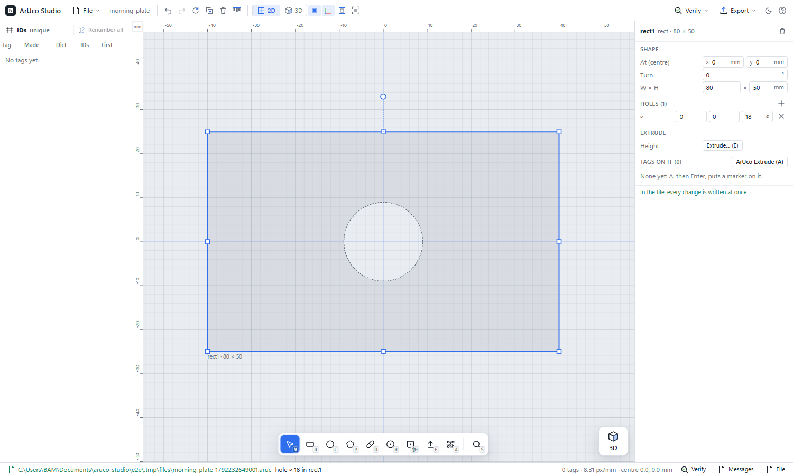
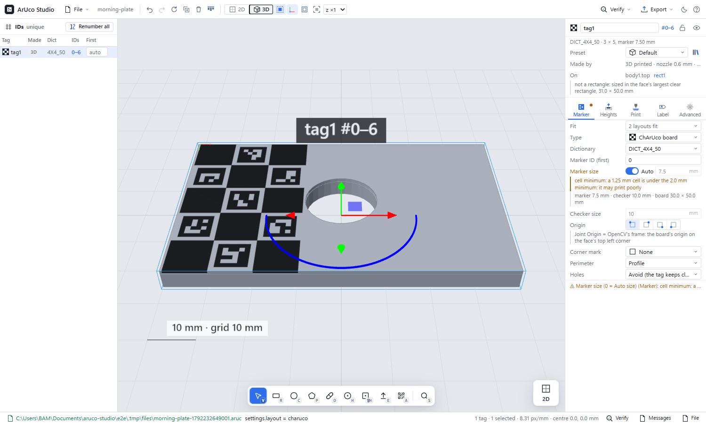
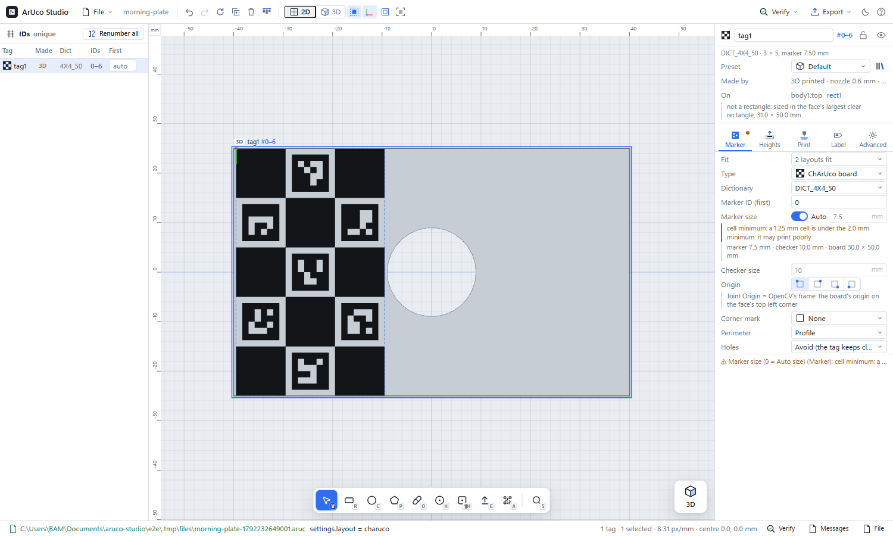
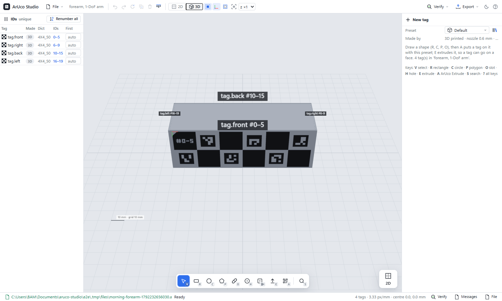
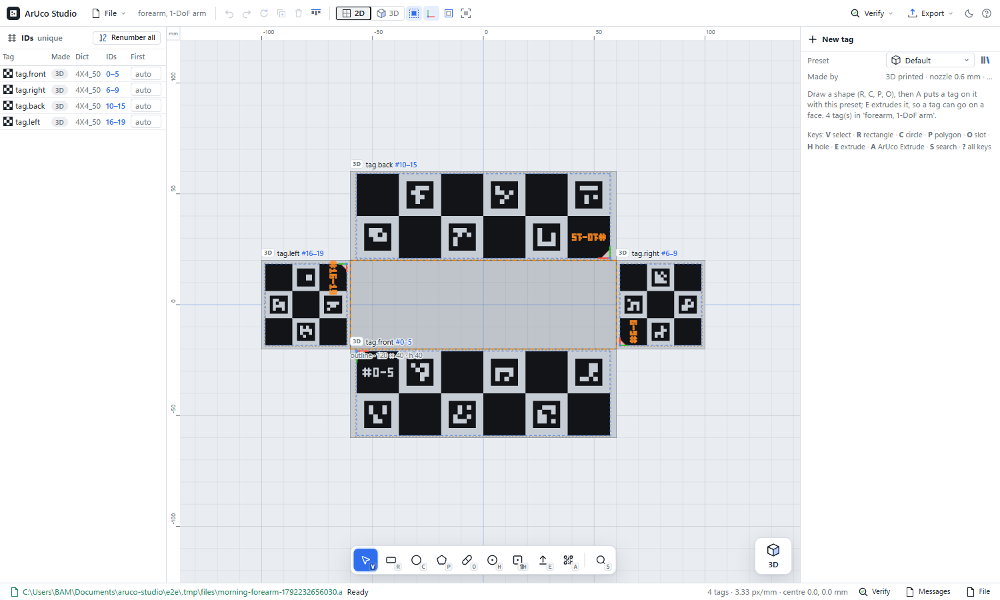
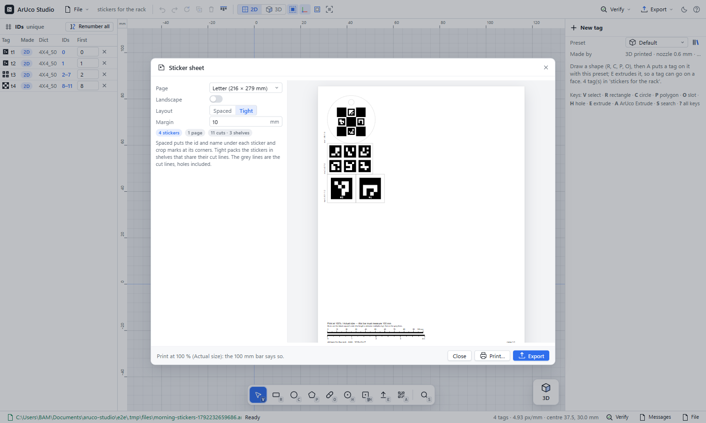
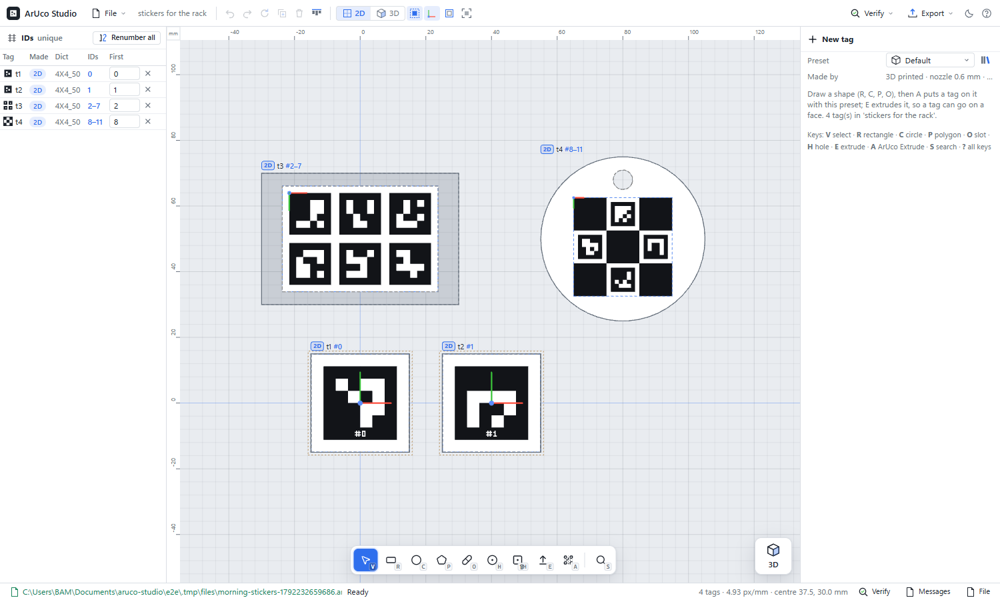
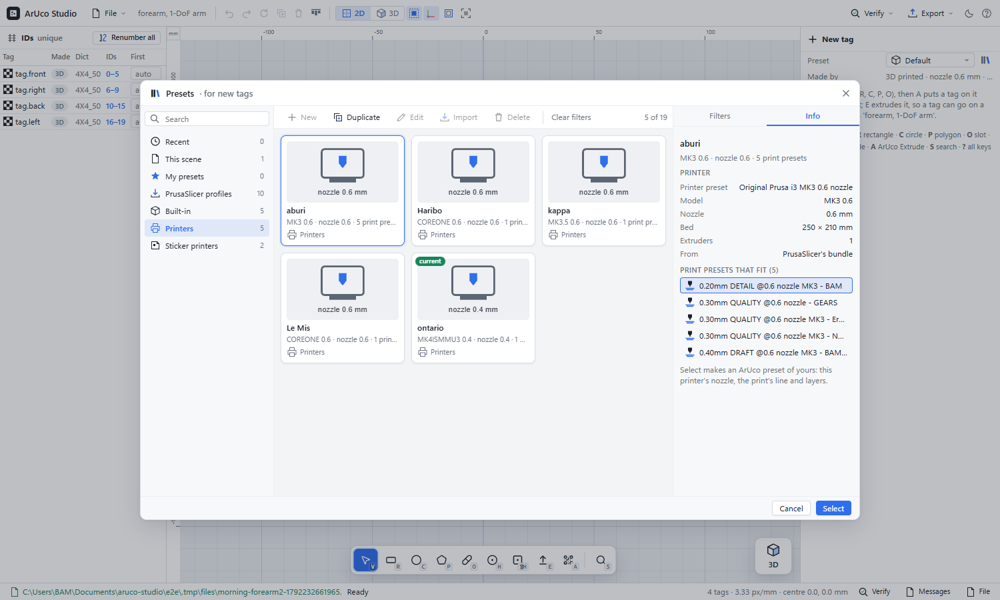
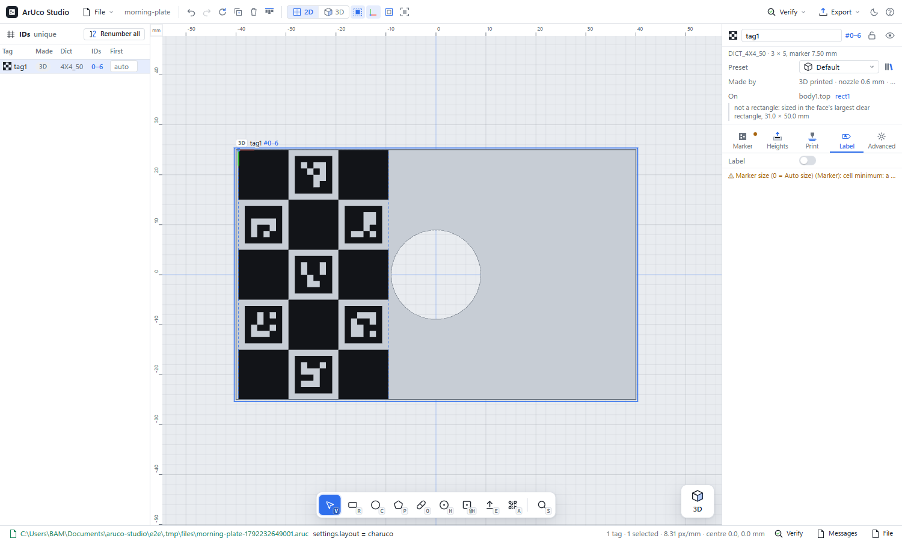
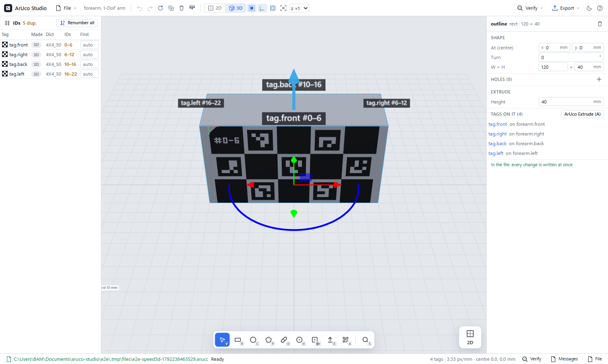
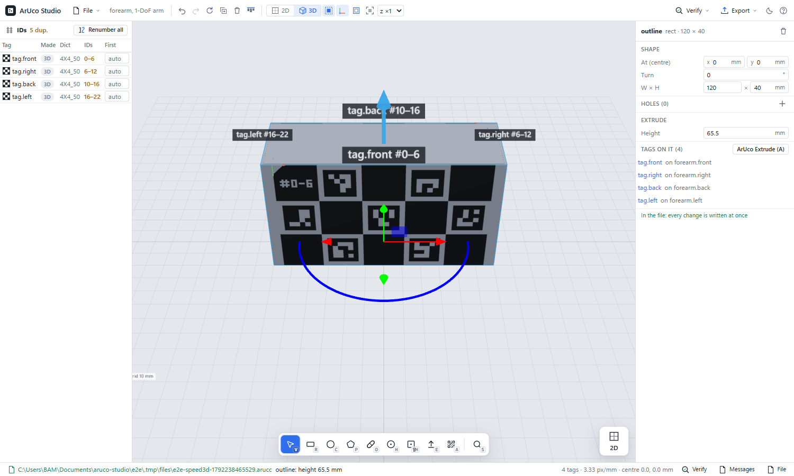
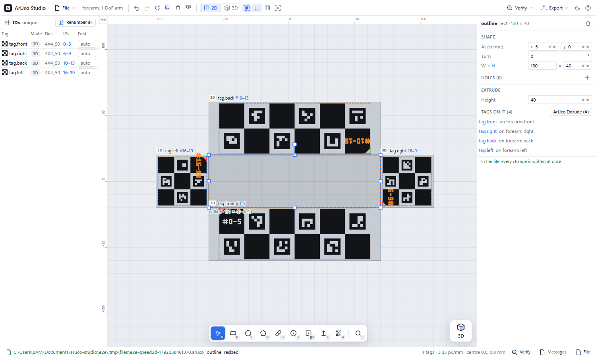
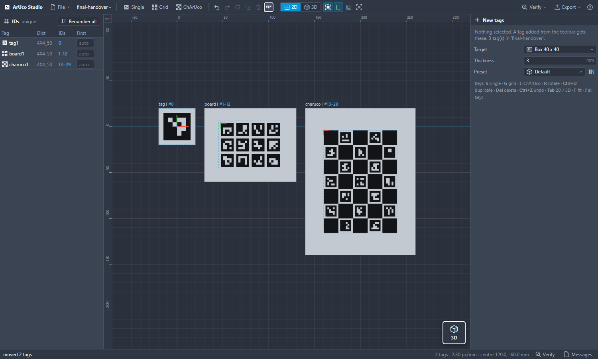
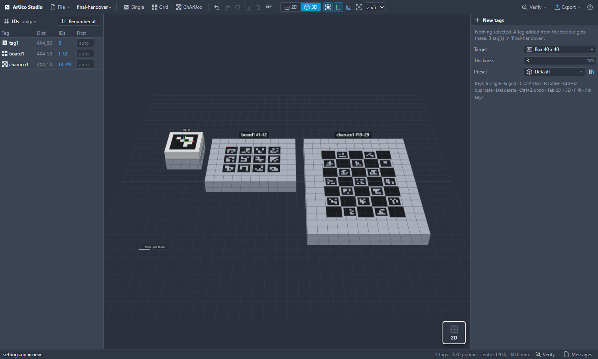
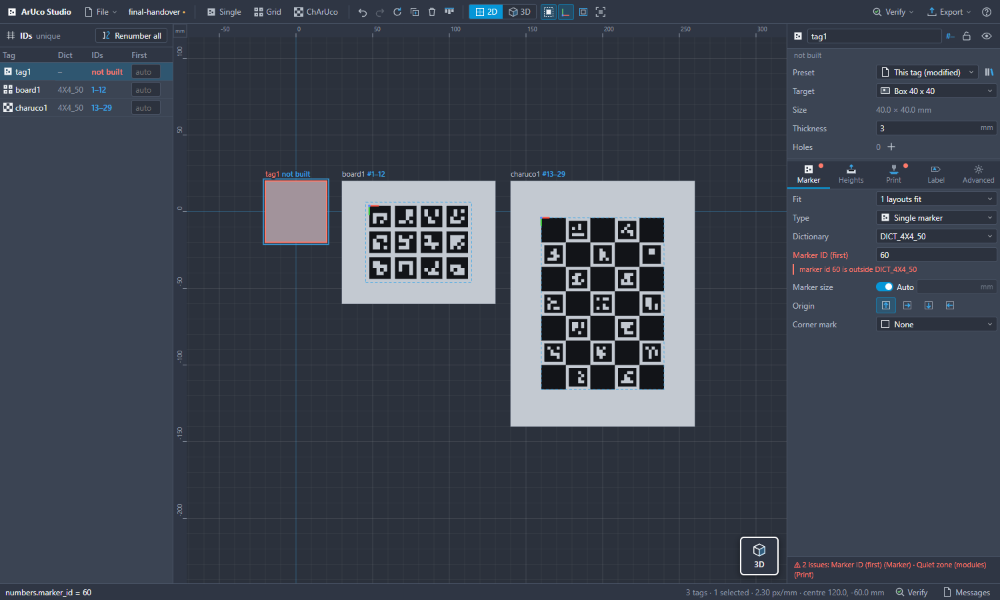
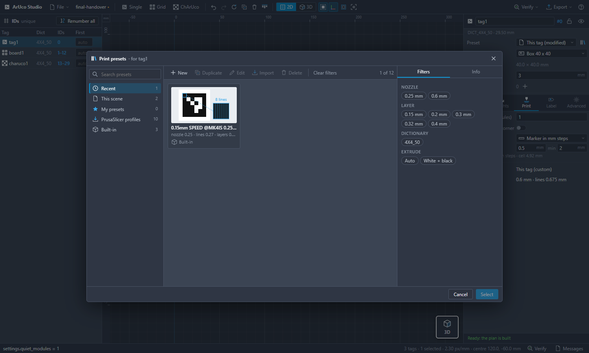